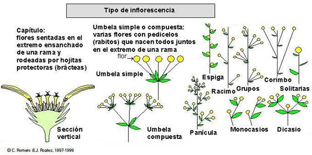
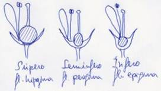

Términos aplicados a
las inflorescencia, a las flores y a sus partes
Inflorescencia Posición
de la flor Sexualidad Simetría
Partes Filotaxia Nº de piezas Posición del ovario Periantio Cáliz Corola
Androceo Gineceo
C. Romero
Zarco, Universidad de Sevilla, Diciembre de 2003.
1.- Inflorescencias
bráctea. Hoja que
acompaña a las flores en las inflorescencias; puede tener un aspecto normal o pueden
estar muy modificadas con respecto a las hojas normales.
bractéola. Bráctea de
segundo orden en una inflorescencia compleja o ramificada.
capítulo. Inflorescencia formada por un eje corto
y muy ensanchado, en forma de cono, de disco o de copa, sobre el que se
asientan directamente numerosas flores sentadas y protegidas por una envuelta
de brácteas (involucro).
cima.
Inflorescencia cimosa en general.
cimosa. Inflorescencia formada por un número
predeterminado de flores, sin yemas activas.
corimbo. Como el racimo (corimbo simple) o como la panícula (corimbo compuesto), pero con
las ramas y pedicelos inferiores más largos, de manera que todas las flores se
sitúan aproximadamente a la misma altura.
dicasio.
Inflorescencia cimosa en la que cada eje termina en una flor y produce dos ejes
laterales opuestos entre sí.
espádice. Como la espiga, pero con el eje ensanchado.
espata. Bráctea en
forma de vaina que recubre parcial o totalmente a una inflorescencia; es
característica, aunque no exclusiva, del espádice.
espiga.
Inflorescencia, generalmente racemosa,
con un solo eje sobre el que se asientan directamente flores sentadas.
monocasio.
Inflorescencia cimosa en la que cada
eje termina en una flor y produce un eje lateral; hay diversos tipos según la
orientación de los ejes.
panícula.
Inflorescencia, generalmente racemosa,
con un eje principal ramificado y ramas laterales sobre las que se disponen las
flores.
racemosa. Inflorescencia que tiene capacidad de
crecimiento a partir de una o varias yemas que van produciendo nuevas flores a
medida que las anteriores van madurando.
racimo.
Inflorescencia racemosa formada por
un eje simple a lo largo del cual se disponen flores pediceladas.
umbela.
Inflorescencia formada por un eje en cuyo extremo nacen juntas varias flores
pediceladas (umbela simple); umbela compuesta es la formada por varias umbelas
simples cuyos pedúnculos nacen juntos en el extremo de una rama.

apical. Cuando la
flor se sitúa en el extremo de un tallo.
axilar. Que nace
solitaria en la axila de una hoja o bráctea, es decir en el ángulo que forma la
hoja con la parte superior del tallo.
pedicelada. Con
pedicelo, es decir, que nace sobre una ramilla especial sin hojas.
sentada. Sin
pedicelo, que nace directamente del eje de la inflorescencia o del tallo.
solitaria. Cuando las
flores se disponen aisladas, no formando inflorescencias.
hermafrodita. Cuando la
flor es completa, es decir, con estambres y pistilo.
unisexual. Cuando la
flor es incompleta, es decir, le faltan estambres o pistilo o tiene alguno de
estos elementos atrofiados.
actinomorfa. En forma de
estrella, es decir, con simetría radial.
asimétrica. Sin plano de
simetría alguno.
disimétrica. Con dos planos de
simetría ortogonales y diferentes.
zigomorfa. Con un sólo
plano de simetría vertical, como una cara.
Las
partes de la flor, de fuera hacia dentro (o de abajo hacia arriba) son:
1.-
periantio. Envuelta floral, que puede estar
formada por:
cáliz. Envuelta con función protectora, formada por hojas
modificadas, generalmente verdes, llamadas sépalos.
corola. Envuelta con función atractiva (para los posibles
polinizadores), formada por hojas modificadas, generalemente coloreadas,
llamadas pétalos.
Cuando no existe diferenciación, las
piezas se denominan tépalos.
2.-
androceo. Parte
masculina de la flor, es decir, conjunto de estambres.
estambre. Cada una de las hojas modificadas en las que se
forma el polen; se compenen de dos partes:
filamento. Parte estéril que sirve de soporte.
antera. Parte fértil que contiene los sacos polínicos con
el polen.
3.-
gineceo. Parte femenina
de la flor, es decir, pistilo(s) o conjunto de carpelos.
carpelo. Unidad estructural del gineceo, cada una de las
hojas modificadas que forma uno o varios pistilos en el centro de la flor y
sobre las que nacen los primordios seminales.
pistilo. Unidad funcional del gineceo; en cada flor puede
haber un solo pistilo o varios y cada pistilo puede estar formado por un solo
carpelo o por la soldadura de varios carpelos; se compone de tres partes:
ovario. Parte inferior ensanchada donde se sitúan los
primordios seminales (óvulos).
estilo. Especie de columna que sirve para elevar el estigma
(puede faltar o puede haber varios).
estigma. Zona receptiva del pistilo donde germina el polen;
se sitúa en el extremo o cerca del extremo del estilo, o bien directamente
sobre el ovario cuando no hay estilo; puede haber más de uno.
acíclica. Con
filotaxia helicoidal, es decir, los elementos de la flor no forman verticilos,
sino que se disponen siguiendo una hélice.
cíclica. Con
filotaxia verticilada, es decir, los elementos florales se disponen formando
pisos o capas (verticilos). Según el número de verticilos florales se denomina:
monocíclica. Flor formada
por un solo verticilo de piezas (estambres o carpelos).
dicíclica. Flor formada
por dos verticilos.
tricíclica. Flor formada por tres verticilos.
tetracíclica. Flor formada
por cuatro verticilos.
pentacíclica. Flor formada
por cinco verticilos.
policíclica. Flor formada
por numerosos verticilos.
La flor, según
el número de piezas de sus verticilos, se denomina:
monómera. Cada
verticilo está formado por una sola pieza.
dímera. Cada
verticilo está formado por dos piezas.
trímera. Cada
verticilo está formado por tres piezas.
tetrámera. Cada
verticilo está formado por cuatro piezas (con frecuencia deriva de una flor
dímera).
pentámera. Cada
verticilo está formado por cinco piezas.
hexámera. Cada
verticilo está formado por seis piezas (con frecuencia deriva de una flor
trímera).
|
epigina. Cuando los verticilos externos se disponen por
encima del ovario (ovario ínfero);
el cáliz se suelda total o parcialmente a la pared del ovario. hipogina. Cuando los verticilos externos se disponen por
debajo de la base del ovario (ovario
súpero). perigina. Cuando los verticilos externos se disponen
alrededor del ovario (ovario
semiínfero); la base del cáliz y el receptáculo floral forman una especie
de copa llamada hipanto. |
 |
aclamídea. Desnuda, sin envuelta floral alguna (de a- negación y clamide túnica griega)
diclamídea. Con dos envueltas diferenciadas, cáliz y corola.
homoclamídeas. Con dos o más envueltas iguales, formadas por tépalos (pueden ser sepaloideos o
petaloideos, según que parezcan a sépalos o pétalos)
monoclamídea. Con una sola envuelta, por pérdida del cáliz o de
la corola; hay dos situaciones diferentes:
asépalas. Sin sépalos, solo hay pétalos.
apétalas. Sin pétalos, solo hay sépalos.
asépala. Sin sépalos,
es decir, cuando falta el cáliz.
corisépala. =
dialisépala.
dialisépala. Con sépalos
no soldados entre sí, que se desprenden separadamente.
gamosépala. = sinsépala.
sinsépala. Con los sépalos
soldados más o menos entre sí desde la base.
acampanada. En forma de
campana.
acopada. En forma de
copa.
apétala. Sin pétalos,
es decir, cuando falta la corola.
coripétala. =
dialipétala.
dialipétala. Con pétalos
no soldados entre sí, que se desprenden separadamente.
gamopétala. = simpétala.
hipocrateriforme. Con la parte
inferior en forma de tubo estrecho y la superior abierta en forma de estrella.
infundibuliforme. En forma de
embudo
rotada. actinomorfa y abierta
en forma de plato o de estrella.
simpétala. Con los
pétalos soldados más o menos entre sí desde la base.
tubulosa. En forma de
tubo cilíndrico.
alternipétalo. Estambres situados de manera alterna con respecto a
los pétalos, es decir, enfrentados con los sépalos.
alternisépalo. Estambres situados de manera alterna con respecto a
los sépalos, es decir, enfrentados con los pétalos.
diadelfo. Estambres soldados entre sí por los filamentos
formando dos grupos.
didínamo. Formado por dos estambres más cortos y otros dos
más largos.
diplostémono. Androceo formado por dos verticilos de estambres.
epicorolino. Con los estambres saldados por la base del
filamento al tubo de la corola.
epipetalino. = alternisépalo.
episepalino. = alternipétalo.
haplostémono. Androceo formado por un solo verticilo de
estambres.
monadelfo. Estambres soldados entre sí por los filamentos
formando un solo grupo (en el centro, alrededor del estilo).
poliadelfo. Estambres soldados entre sí por los filamentos
formando varios grupos.
poliándrico. Formado por numerosos estambres (más de 12 en
general)
singenésico. Estambres soldados entre sí por las anteras
tetradínamo. Formado por dos estambres más cortos y cuatro más
largos.
apocárpico. Gineceo formado por dos o más carpelos separados
entre sí.
cenocárpico. Gineceo formado por dos o más carpelos más o menos
soldados entre sí.
coricárpico. = apocárpico
hemisincárpico. Gineceo formado por dos o más carpelos soldados
entre sí sólo por la parte inferior.
ínfero. Ovario situado, casi por completo, por debajo del
nivel de los restantes verticilos florales.
monocarpelar. Gineceo o pistilo formado por un solo carpelo
paracárpico. Gineceo formado por dos o más carpelos soldados
completamente entre sí formando una sola cavidad.
policárpico. Ovario situado por encima del nivel de los
restantes verticilos florales.
semiínfero. Ovario situado parcialmente por debajo del nivel de
los restantes verticilos florales.
sincárpico. Gineceo formado por dos o más carpelos soldados
completamente entre sí formando varias cavidades.
súpero. Ovario situado por encima del nivel de los
restantes verticilos florales.
Bibliografía:
Font Quer, P. (1953) Diccionario de
Botánica. Ed. Labor, Barcelona
Heywood, V.H. (1985) Las plantas con
flores. Ed. Reverté, Barcelona.